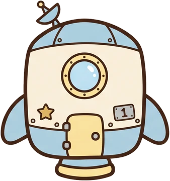

По ним считается ваша карта, а по ней — каждый день.
Данные рождения хранятся только в этом телефоне и никуда не отправляются.
Штриховка и ≈ — час посчитан оценкой: телефон в это время не отдавал показания, и шаги разделены по времени между соседними часами.
Политика конфиденциальности · Пользовательское соглашение · Сведения о разработчике
Расчёт — Swiss Ephemeris (AGPL). Города — GeoNames (CC BY 4.0). Звёзды и созвездия — d3-celestial (BSD). Исходный код открыт: github.com/AstroLab-you/astrolab-day
Считаю Луну…